0x01 前言 这段时间反思了下，以前分析的那些框架级别漏洞，跟进一遍后就没有然后了，对漏洞的理解还是太浅，达不到举一反三的作用，再看一次fastjson
0x02 跟进调用链
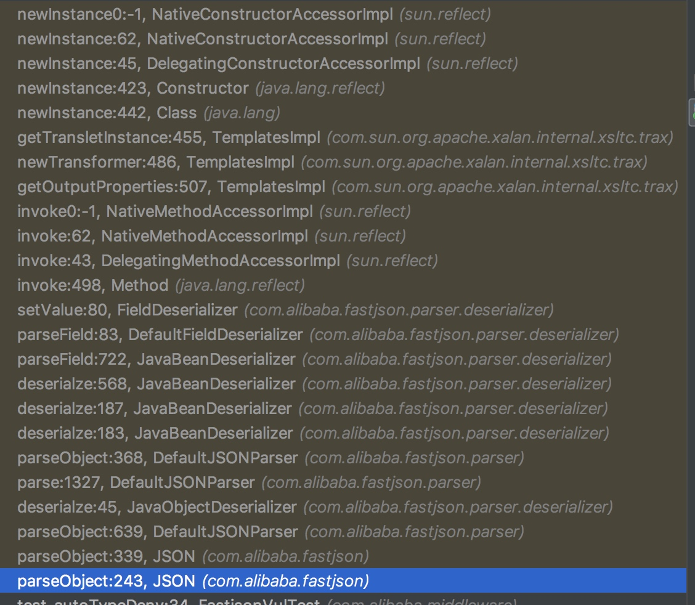
JSON.parseObject
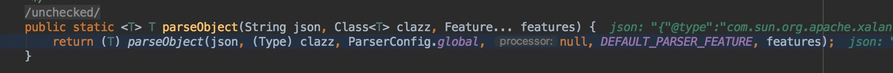
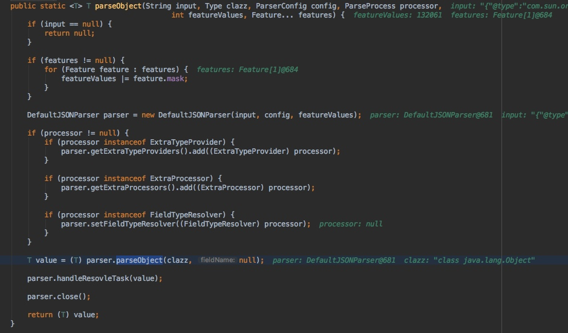
JSON是一个抽象类，JSON中有一个静态方法parseObject（String text），将text解析为一个JSONObject对象并返回
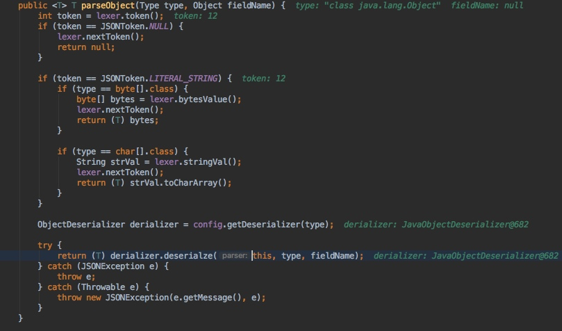
fastjson支持注册ObjectDeserializer实现自定义反序列化。要自定义序列化，首先需要实现一个ObjectDeserializer，然后注册到ParserConfig中
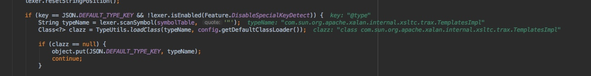
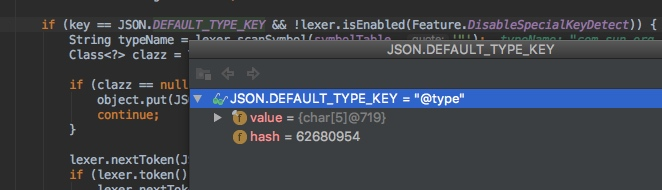
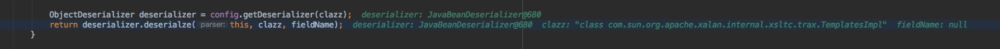
key是@type并启用了SpecialKeyDetect
把com.sun.org.apache.xalan.internal.xsltc.trax.TemplatesImpl加载为类
看一下getDeserializer的实现
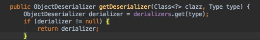
过一遍denyList
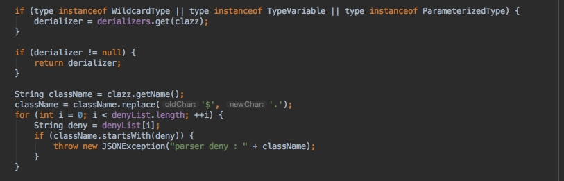
还有一些常见内置类
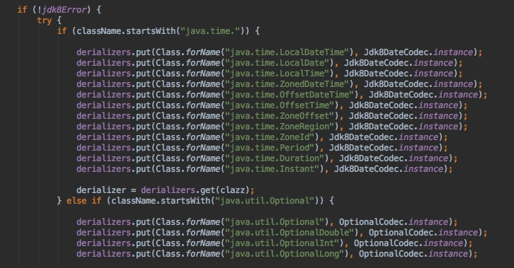
均没有过滤之后通过createJavaBeanDeserializer来处理反序列化

createJavaBeanDeserializer方法后边需要经过JavaBeanInfo.build的处理
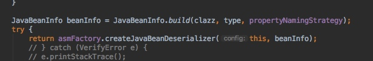
跟踪build方法

会遍历传入类的方法、字段等，需要满足下边的条件才会被添加到fieldList中
以set举例，还会以类似的规则处理get、field
for (Method method : methods) { //
int ordinal = 0, serialzeFeatures = 0, parserFeatures = 0;
String methodName = method.getName();
if (methodName.length() < 4) {
//方法名长度大于4
continue;
}
if (Modifier.isStatic(method.getModifiers())) {
//是静态方法
continue;
}
// support builder set
if (!(method.getReturnType().equals(Void.TYPE) || method.getReturnType().equals(method.getDeclaringClass()))) {
//返回类型需要是void类型或者是当前类型
continue;
}
Class<?>[] types = method.getParameterTypes();
if (types.length != 1) {
//参数只能有一个
continue;
}
JSONField annotation = method.getAnnotation(JSONField.class);
if (annotation == null) {
annotation = TypeUtils.getSuperMethodAnnotation(clazz, method);
}
if (annotation != null) {
if (!annotation.deserialize()) {
continue;
}
ordinal = annotation.ordinal();
serialzeFeatures = SerializerFeature.of(annotation.serialzeFeatures());
parserFeatures = Feature.of(annotation.parseFeatures());
if (annotation.name().length() != 0) {
String propertyName = annotation.name();
add(fieldList, new FieldInfo(propertyName, method, null, clazz, type, ordinal, serialzeFeatures, parserFeatures,
annotation, null, null));
continue;
}
}
if (!methodName.startsWith("set")) {
//以set开头
// TODO "set"的判断放在 JSONField 注解后面，意思是允许非 setter 方法标记 JSONField 注解？
continue;
}
char c3 = methodName.charAt(3);
String propertyName;
if (Character.isUpperCase(c3) //
|| c3 > 512 // for unicode method name
) {
if (TypeUtils.compatibleWithJavaBean) {
propertyName = TypeUtils.decapitalize(methodName.substring(3));
} else {
propertyName = Character.toLowerCase(methodName.charAt(3)) + methodName.substring(4);
}
} else if (c3 == '_') {
propertyName = methodName.substring(4);
//取_后字符做变量名，即第4个往后
} else if (c3 == 'f') {
propertyName = methodName.substring(3);
//set往后，即第3个往后
} else if (methodName.length() >= 5 && Character.isUpperCase(methodName.charAt(4))) {
//长度大于5并且第5个字母大写
propertyName = TypeUtils.decapitalize(methodName.substring(3));
//取set后边字符并转为小写
} else {
continue;
}
.......
add(fieldList, new FieldInfo(propertyName, method, field, clazz, type, ordinal, serialzeFeatures, parserFeatures,
annotation, fieldAnnotation, null));
}
上边跟踪了下getDeserializer的实现
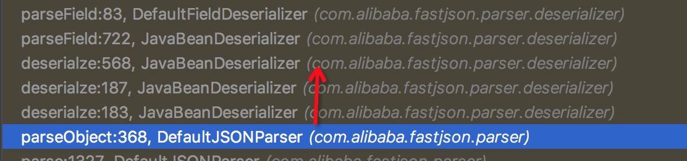
接下来就是deserialze了
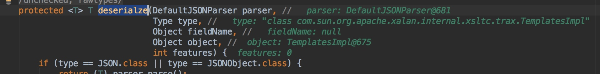
遍历javabeaninfo中处理返回的fieldList

遍历的过程会对相应的field进行getDeserializer处理
然后通过parseField进行反序列化
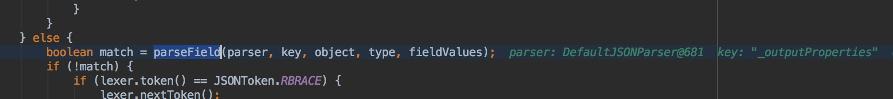
跟进parseField看一下实现，它的作用应该就是实现“定制序列化”这个特性
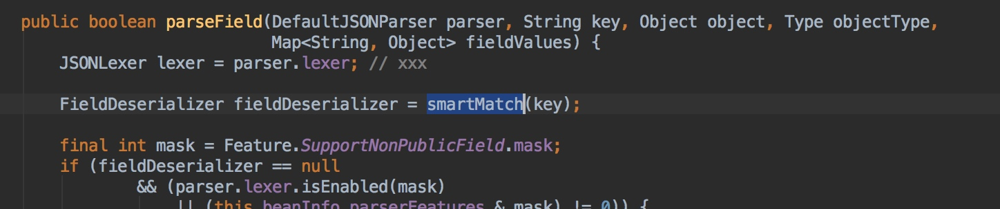
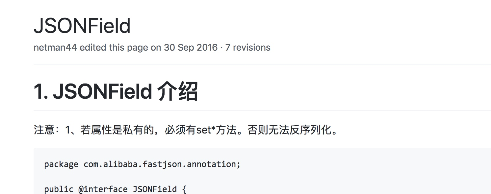
parseField里调用了smartMatch方法，这个漏洞很关键的一个点
这也就是遍历到_outputProperties时执行getOutputProperties()的症结所在
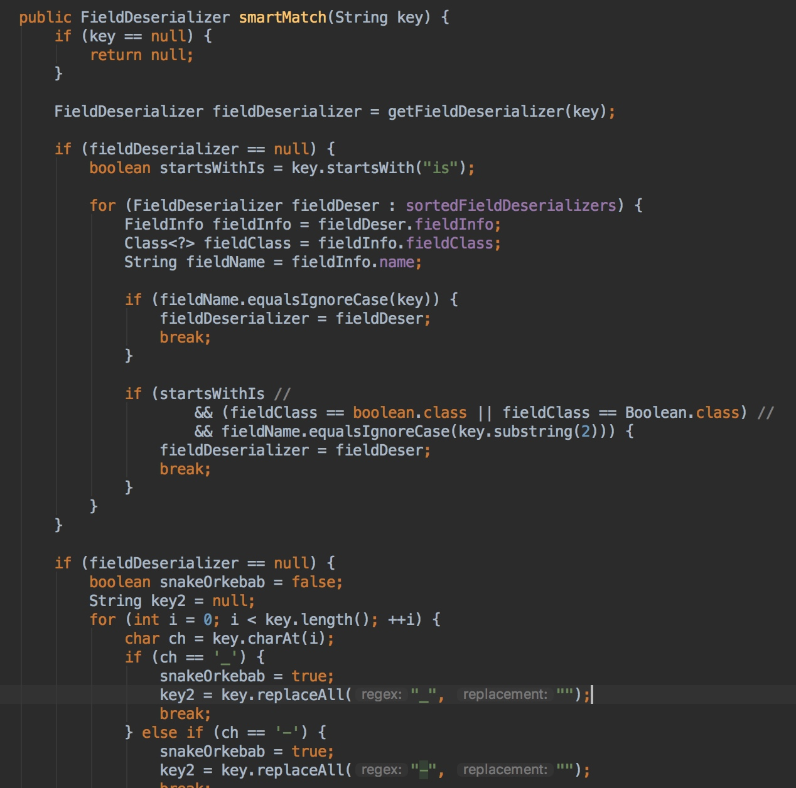
可以看到parseField调用了setValue
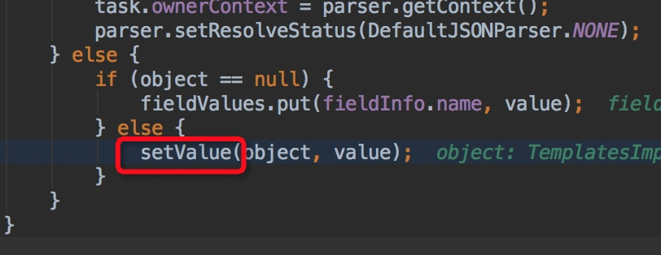
跟进一下setValue可以看到method就是getOutputProperties()
既然是这样，那么很明显的是要利用getOutputProperties()来执行恶意代码
关于getOutputProperties()的执行链可以看上一篇分析https://uxss.net/%20FastJsonUnserialization.html
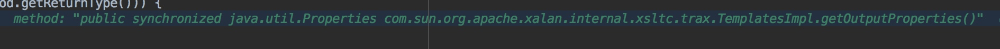
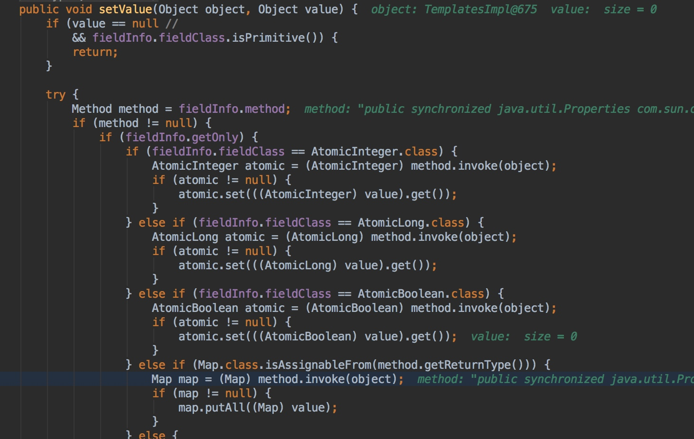
0x03 构造POC和执行的根本原因
上一篇基本已经提及了https://uxss.net/%20FastJsonUnserialization.html
很精妙的一个漏洞，环环相扣
这个gadget更是各种巧合，只要有任意一个点限制，就不能利用成功
若json字符串中包含@type字段，会按照@type指定的类进行反序列化
在修复版本中会默认忽略该字段，若数据中有@type字段，会抛出autoType is not support错误
同时修复版本中允许通过配置白名单的形式来提供对特定类反序列化的支持
1、调用链
1、为什么会走到这一步
2、关键方法是什么
3、特性是什么
4、继承自哪里
2、最后是如何执行的
1、根本原因/本质是什么
3、如果是自己，该怎么挖出这个漏洞
4、再构造一次poc
1、构造要点
2、所需条件
参考：
https://github.com/alibaba/fastjson/wiki/
http://xxlegend.com/2017/04/29/title-%20fastjson%20%E8%BF%9C%E7%A8%8B%E5%8F%8D%E5%BA%8F%E5%88%97%E5%8C%96poc%E7%9A%84%E6%9E%84%E9%80%A0%E5%92%8C%E5%88%86%E6%9E%90/
https://ricterz.me/posts/Fastjson%20Unserialize%20Vulnerability%20Write%20Up
http://5alt.me/2017/09/fastjson%E8%B0%83%E8%AF%95%E5%88%A9%E7%94%A8%E8%AE%B0%E5%BD%95/
本文由 B1ueB0ne
创作，采用 知识共享署名4.0 国际许可协议进行许可
本站文章除注明转载/出处外，均为本站原创或翻译，转载前请务必署名
最后编辑时间为: 2018-03-23T15:38:52+08:00